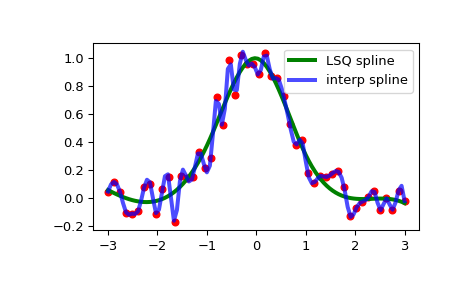

make_lsq_spline#
- scipy.interpolate.make_lsq_spline(x, y, t, k=3, w=None, axis=0, check_finite=True, *, method='qr', clamp_values=None)[source]#
Create a smoothing B-spline satisfying the Least SQuares (LSQ) criterion.
The result is a linear combination
\[S(x) = \sum_j c_j B_j(x; t)\]of the B-spline basis elements, \(B_j(x; t)\), which minimizes
\[\sum_{j} \left( w_j \times (S(x_j) - y_j) \right)^2\]- Parameters:
- xarray_like, shape (m,)
Abscissas.
- yarray_like, shape (m, …)
Ordinates.
- tarray_like, shape (n + k + 1,)
Knots. Knots and data points must satisfy Schoenberg-Whitney conditions.
- kint, optional
B-spline degree. Default is cubic,
k = 3.- warray_like, shape (m,), optional
Weights for spline fitting. Must be positive. If
None, then weights are all equal. Default isNone.- axisint, optional
Interpolation axis. Default is zero.
- check_finitebool, optional
Whether to check that the input arrays contain only finite numbers. Disabling may give a performance gain, but may result in problems (crashes, non-termination) if the inputs do contain infinities or NaNs. Default is True.
- methodstr, optional
Method for solving the linear LSQ problem. Allowed values are “norm-eq” (Explicitly construct and solve the normal system of equations), and “qr” (Use the QR factorization of the design matrix). Default is “qr”.
- clamp_valuestuple, optional
A 2-tuple
(ci, cf)where each element is either a real number, a numeric array orNone. Pins the spline’s value atx[0]tociand atx[-1]tocf.Noneleaves that endpoint unclamped. For example,(5, None)clampsx[0]to5and leavesx[-1]free. Requires the knot vector to have multiplicityk + 1located exactly at the clamped endpoint(s) and be equal tox[0]andx[-1]. Default is None.
- Returns:
See also
BSplinebase class representing the B-spline objects
make_interp_splinea similar factory function for interpolating splines
LSQUnivariateSplinea FITPACK-based spline fitting routine
splrepa FITPACK-based fitting routine
Notes
The number of data points must be larger than the spline degree
k.Knots
tmust satisfy the Schoenberg-Whitney conditions, i.e., there must be a subset of data pointsx[j]such thatt[j] < x[j] < t[j+k+1], forj=0, 1,...,n-k-2.When
clamp_valuesis supplied, the knot vector must additionally have multiplicityk + 1at the endpoint(s) being clamped, i.e.t[0] == t[1] == ... == t[k]for the left endpoint and/ort[-1] == t[-2] == ... == t[-(k+1)]for the right endpoint. This holds for the standard clamped knot vector construction as well as other constructions with the same boundary multiplicity, such as not-a-knot boundary conditions.Array API Standard Support
make_lsq_splinehas support for Python Array API Standard compatible backends in addition to NumPy. The following combinations of backend and device (or other capability) are supported.Library
CPU
GPU
NumPy
✅
n/a
CuPy
n/a
⛔
PyTorch
✅
⛔
JAX
⚠️ no JIT
⛔
Dask
⚠️ computes graph
n/a
See Support for the array API standard for more information.
Examples
Generate some noisy data:
>>> import numpy as np >>> import matplotlib.pyplot as plt >>> rng = np.random.default_rng() >>> x = np.linspace(-3, 3, 50) >>> y = np.exp(-x**2) + 0.1 * rng.standard_normal(50)
Now fit a smoothing cubic spline with a pre-defined internal knots. Here we make the knot vector (k+1)-regular by adding boundary knots:
>>> from scipy.interpolate import make_lsq_spline, BSpline >>> t = [-1, 0, 1] >>> k = 3 >>> t = np.r_[(x[0],)*(k+1), ... t, ... (x[-1],)*(k+1)] >>> spl = make_lsq_spline(x, y, t, k)
For comparison, we also construct an interpolating spline for the same set of data:
>>> from scipy.interpolate import make_interp_spline >>> spl_i = make_interp_spline(x, y)
Plot both:
>>> xs = np.linspace(-3, 3, 100) >>> plt.plot(x, y, 'ro', ms=5) >>> plt.plot(xs, spl(xs), 'g-', lw=3, label='LSQ spline') >>> plt.plot(xs, spl_i(xs), 'b-', lw=3, alpha=0.7, label='interp spline') >>> plt.legend(loc='best') >>> plt.show()

NaN handling: If the input arrays contain
nanvalues, the result is not useful since the underlying spline fitting routines cannot deal withnan. A workaround is to use zero weights for not-a-number data points:>>> y[8] = np.nan >>> w = np.isnan(y) >>> y[w] = 0. >>> tck = make_lsq_spline(x, y, t, w=~w)
Notice the need to replace a
nanby a numerical value (precise value does not matter as long as the corresponding weight is zero.)